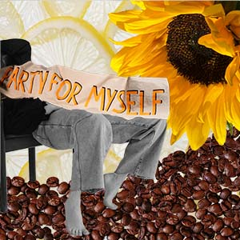
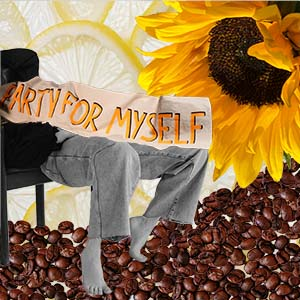

Mind, Body, and Spirit Collage by Jaylee
 


ARTIST'S STATEMENT I really enjoyed this project. Doing a process book was interesting and a little challenging because I tend to jump around a lot during my creative process. Deciding what was important enough to document was tricky, but I enjoyed looking through my steps, especially on the MIND collage, since I was about 90% done with it before deciding to start over. The most interesting thing I learned by this process was the amount of times I would find a photo that I was certain had to be included, but then in the grand scheme would end up removing because it didn’t serve a purpose in the piece as a whole. Before this project, I had never used photoshop before, and now I feel like I know all of the basic tools and tricks. One concept I learned from this project is that there isn’t a need to over complicate things, if something works, just let it work. View my process